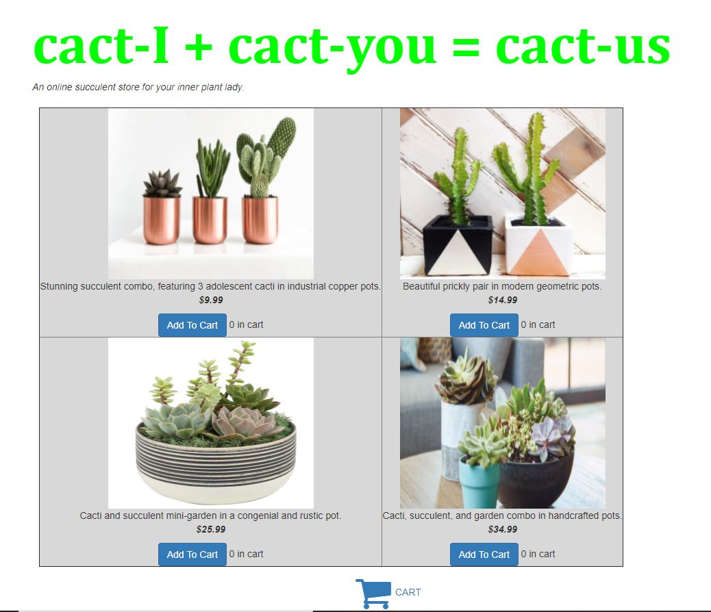
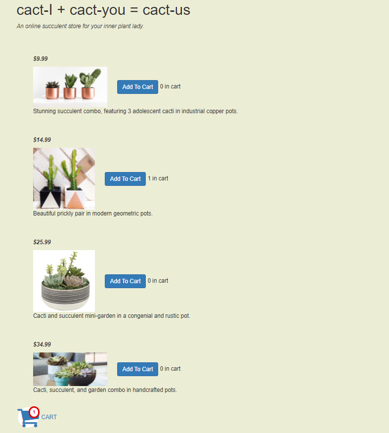

Version A

Version B

Hypotheses for Time To Completion
My hypothesis for Time To Completion is that the
Data Collection Process
I have collected data from 40 users. About 5 users are from my studio lab who have opened and used my app. 2 users are my family members - my mom and dad. The remaining 33 users are my friends on social media. I had posted a link of my heroku app on instagram and I had 33 of my friends use the app. My instruction to all my users was to click on the app and fill the cart upto minimum $150. I then viewed the data through the logs. There were also a few additional users who used the app,however, I neglected them because they did not add anything to the cart (or the total amount was insignificant) and the number of such users was fairly low.
Infographic

I have chosen the gatesnfences.com website. This is a site for users to buy different types of gates and/or fences for their needs. This site has a large range of items available, however, there are some critical issues with the website design and my aim is to redesign the website fixing those issues.
Part 1: Identifying Usability Problems
I have conducted accessibility-checking using the WAVE service tool
As we can see from the summary image, there are many problems associated with this site. From this result, I have chosen to focus on the the Contrast Errors.
Additionally, there are a few other problems that I can see with the design layout of the website and the website content.